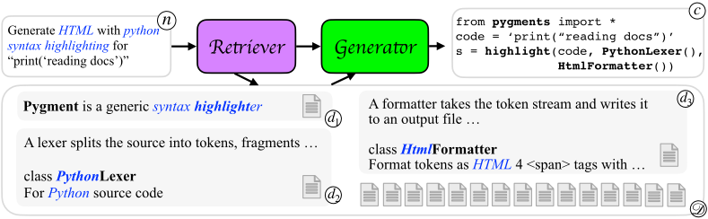
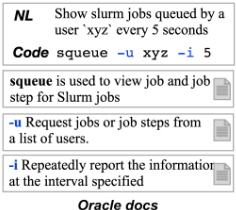
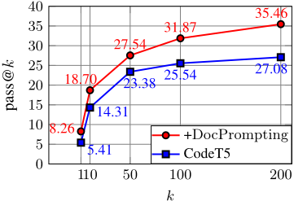
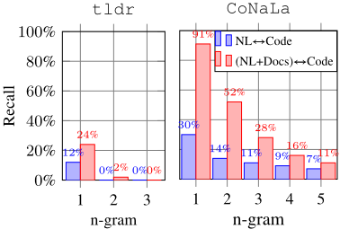
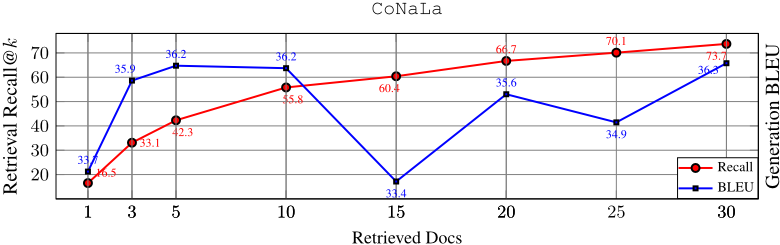
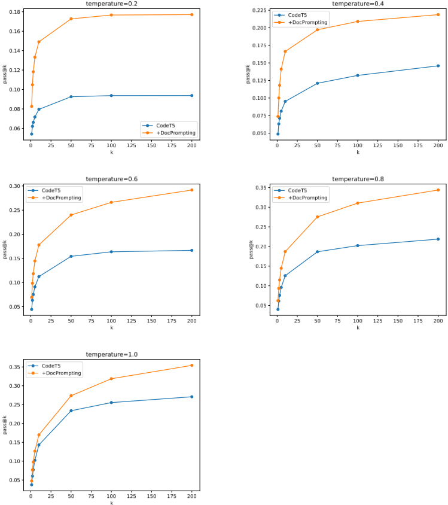

DocPrompting：通过检索文档生成代码
现有 NL→code 模型假设训练数据覆盖所有库与函数，无法泛化到训练时未见过的 API，而新库和新函数持续出现，靠重训模型无法跟上。DocPrompting 提出'先检索文档、再生成代码'的范式：给定自然语言意图，先用 BM25 或对比学习训练的稠密检索器从文档池取 top-k 相关文档，再将意图与文档拼入 prompt（超长时用 FiD 并行编码）交给 CodeT5、T5、GPT-Neo 或 Codex 生成代码；文档池作为外部存储可随新库发布随时更新而无需重训任何组件。实验显示 CodeT5 在 CoNaLa 上 pass@1 提升 2.85%（相对 52%），未见函数召回从 9.03 提至 18.30；在新构建的 tldr Bash 基准上最高提升绝对 6.9% EM，且检索文档显著优于检索 NL-code 示例（ExPrompting）。对团队而言，这是 RAG 用于代码生成的代表性工作，其检索器选型、弱监督训练与多文档上下文组织方式可直接借鉴。
现有代码生成模型要么从 NL-code 对训练、要么从代码语料隐式学习，均假设所有库和函数调用在训练数据中出现过，因此天然无法生成未见过的函数、库甚至未见过的参数；而公开代码库持续增长变化，靠重训模型无法跟上。论文希望让模型像人类程序员首次使用库时查阅手册和文档那样，在生成代码前显式利用文档，从而泛化到未见过的用法。
retrieve-then-generate 两段式架构：(1) 检索器 R 依据 NL 意图从文档池 D 中取相似度 top-k 文档，可用 Elasticsearch+BM25 稀疏检索，或以 oracle 文档为正例、批内负例做对比学习训练的稠密检索器（以 SimCSE 或 CodeT5 编码器初始化，并混合文档池句子的弱监督信号）；(2) 生成器 G 将意图与检索到的文档拼接为新 prompt 生成代码，T5/CodeT5 因 512 token 输入限制采用 FiD（fusion-in-decoder）对每个 (意图, 文档) 对独立编码、解码器统一注意，Codex 则采用包含检索文档的 few-shot prompt。文档池可按项目定制子集，可频繁加入新库文档而无需重训任何模型组件。
CoNaLa 执行评测：CodeT5+DocPrompting pass@1 提升 2.85%（相对提升 52%），pass@10 提升 4.39%（相对 30%），pass@5 提升 4.45%，k=200 时差距扩大到 8.38%
未见函数召回 recallunseen：DocPrompting 达 18.30，基线 CodeT5 仅 9.03；CodeT5+DocPrompting 较以 CodeT5 初始化的 SOTA 基线 BLEU 提升 1.65
tldr（新 Bash 基准）：DocPrompting 使 CodeT5 与 GPT-Neo-1.3B 最高提升绝对 6.9% EM；T5 命令名准确率翻倍以上、charBLEU 提升 16+ 点、EM 绝对提升近 9%；Codex 提升 6.7 charBLEU
给定 oracle 命令名时，Codex 的 EM 从 22.44% 提升至 32.43%
检索文档（DocPrompting）带来的收益远高于检索 NL-code 示例（ExPrompting）
检索器消融：CoNaLa 上 BM25 recall@10 仅 9.73%，CodeT5 稠密检索器达 55.81；tldr 上 BM25 即可匹敌稠密检索器；移除文档池弱监督后 CoNaLa 检索性能严重退化
加入文档使 NL 与代码的 unigram overlap 从 12% 提至 24%（tldr），说明文档弥合了'意图术语'与'代码术语'的鸿沟
code-davinci-002 上 DocPrompting 未见提升（作者归因于疑似数据泄漏），但使用 oracle 检索器时在两个数据集上均有显著提升
据作者所述，这是首个显式且有效在代码生成中利用文档的工作：与已有检索式代码生成模型检索 NL-code 对或代码片段（ExPrompting）不同，DocPrompting 检索对象是文档，理由是新库发布时文档先于使用示例出现；文档池作为可频繁更新的外部数据存储，无需重训任何模型组件即可支持未见 API；同时贡献了 tldr 基准、按'未见函数'原则重划分的 CoNaLa，以及每个样例的 oracle 文档标注，作为检索式代码生成的测试床。
相关度级别：high
命中能力域：3.1 上下文工程与记忆 | 3.5 评测与可靠使用
理由：直接命中 3.1 的核心技术：RAG/检索增强与结构化上下文组织——文档池构建与切分、top-k 检索、检索结果与意图拼接为 prompt、FiD 式并行编码解决多文档超出上下文窗口的问题，且代码生成是团队的核心工程场景之一；同时论文贡献了带 oracle 文档标注的两个评测基准、检索器/生成器系统消融与'为什么文档有效'的实证分析，与 3.5 的评测基准与 AI 辅助工程实证研究相关。论文不涉及 Agent、多智能体或模型训练，但其'把模型用好'的上下文工程思路与团队定位高度一致。
建议动作：深入精读并做内部分享
arXiv:2207.05987v3 [cs.CL] 18 Feb 2023
Shuyan Zhou †, Uri Alon † Frank F. Xu †, Zhiruo Wang †, Zhengbao Jiang †, Graham Neubig †‡ † 卡内基梅隆大学语言技术研究所，‡ Inspired Cognition {
shuyanzh,ualon,fangzhex,zhiruow,zhengbaj,gneubig } @cs.cmu.edu
公开可用的源代码库在不断增长和变化。这使得代码模型仅通过在现有代码仓库上进行训练，就无法与所有可用的 API 保持同步。因此，现有模型本质上无法泛化到使用未见过的函数和库，因为这些内容永远不会出现在它们的训练数据中。相比之下，人类程序员在首次使用函数和库时，经常会参考代码手册和文档等文本资源，以探索和理解可用的功能。受这一观察的启发，我们提出了 DocPrompting：一种自然语言到代码的生成方法，它显式地利用代码文档，具体做法是：(1) 根据给定的自然语言（NL）意图检索相关的文档片段；(2) 基于 NL 意图和检索到的文档生成代码。DocPrompting 具有通用性：它可以应用于任何编程语言，并且与底层神经模型无关。我们证明 DocPrompting 能够持续改进自然语言到代码的模型：在流行的 Python CoNaLa 基准测试（benchmark）上基于执行的评估中，DocPrompting 使 CodeT5 等强大的基础模型在 pass@1 上提升了 2.85%（相对提升 52%），在 pass@10 上提升了 4.39%（相对提升 30%）；在一个新的 Bash 数据集 tldr 上，DocPrompting 使 CodeT5 和 GPT-Neo-1.3B 的精确匹配（exact match）绝对提升最高达 6.9%。1
我们研究自然语言到代码生成（NL → code）这一任务：给定一个自然语言意图，生成一段以 Python 或 Bash 等通用编程语言编写的代码片段。由于在海量自然语言和代码上训练的大语言模型的出现，该任务近来受到的关注急剧增长（Chen et al., 2021; Xu et al., 2022; Fried et al., 2022）。NL → code 模型让程序员只需表达其更高层次的意图即可编写代码，从而为专业程序员和缺乏经验的程序员都简化了编程。
许多现有的代码生成模型要么直接从作为训练数据提供的输入-输出对中学习（Allamanis et al., 2015; Yin and Neubig, 2017; Iyer et al., 2018; Brockschmidt et al., 2019; Xu et al., 2020; Alon et al., 2020; Wang et al., 2021），要么从自然语言与代码交织出现的天然语料库中隐式地学习输入与输出之间的映射（Austin et al., 2021; Nijkamp et al., 2022）。尽管如此，所有这些工作都假设所有库和函数调用都已在训练数据中出现过；并且假设在测试时，训练好的模型只需生成见过的库和函数调用。然而，新的函数和库不断被引入，即使是见过的函数调用也可能带有未见过的参数。因此，这些现有模型从本质上无法泛化以生成这类未见过的用法。
与这些现有模型不同，人类程序员在编写代码时经常查阅手册和文档（Nykaza et al., 2002; Lethbridge et al., 2003）。这使人类能够轻松使用他们从未见过也从未使用过的函数和库。受这种能力的启发，发表于 ICLR 2023 会议
1 数据和代码可在 https://github.com/shuyanzhou/docprompting 获取。

我们提出 DocPrompting：一种在生成代码之前学习检索代码文档的代码生成方法。我们方法的概览如图 1 所示：首先，文档检索器利用 NL 意图 n © 从文档池 D © 中检索相关的代码文档 { d 1 © , d 2 © , d 3 © }。然后，代码生成器在其提示中使用这些文档来生成相应的代码 c ©。文档池充当一个外部数据存储，可以频繁地用新内容（例如新发布库的文档）进行更新，而无需重新训练任何模型组件。这样，DocPrompting 就能够利用新添加的文档，并且能够生成包含未见过的、未使用过的函数和库的代码。DocPrompting 是通用的，适用于任何编程语言和底层基础架构。据我们所知，这是首次在代码模型中显式且有效地利用文档的示范。
我们在两个自然语言（NL）→ 代码基准测试（benchmark）和任务上、跨两种编程语言、使用多个基础模型验证了 DocPrompting 的有效性，这些基础模型包括：GPT-Neo（Black et al., 2021）、T5（Raffel et al., 2020）、CodeT5（Wang et al., 2021）、Fusion-in-Decoder（Izacard and Grave, 2021））以及 Codex（Chen et al., 2021）。此外，我们同时实验了稀疏检索器（如 BM25（Robertson and Jones, 1976））和稠密检索模型（如 SimCSE（Gao et al., 2021））。最后，我们为基于检索的代码生成引入了两个新的基准测试：(a) 在 Bash 方面，我们通过爬取 tldr 仓库精心构建了一个新的基准测试，并构造了命令互不重叠的训练/开发/测试划分；(b) 在 Python 方面，我们对流行的 CoNaLa 基准测试（Yin et al., 2018）进行了重新划分，使每个测试样例都至少包含一个训练数据中未见过的 Python 函数。使用 DocPrompting 的模型始终优于仅基于 NL 意图生成代码的对应基础模型。在 CoNaLa 上基于执行的评估中，使用 DocPrompting 使 CodeT5 等强大的基础模型在 pass@1 上提升了 2.85%（相对提升 52%），在 pass@10 上提升了 4.39%（相对提升 30%）；在新的 tldr 数据集上，DocPrompting 使 CodeT5 和 GPT-Neo-1.3B 的精确匹配（exact match）绝对提升最高达 6.9%。我们发布了新的基准测试，其中包括每个样例的 oracle 文档标注以及文档池，以作为未来基于检索的代码生成模型的试验平台。
我们的基本假设是：对于大多数库和编程语言而言，代码文档是最详尽且简洁的资源（Roehm et al., 2012），并且文档能够有效地泛化到未见过的库和函数（Forward and Lethbridge, 2002）。我们遵循先检索后生成（retrieve-then-generate）范式（Lewis et al., 2020; Guu et al., 2020），重点关注文档的检索。在本节中，我们描述 DocPrompting 的总体方法；在 §3 和 §6.2 中，我们将详细阐述并实验验证 DocPrompting 的实际实现。
形式化定义 给定自然语言（NL）意图 n，我们的目标是生成一段以某种编程语言（PL）（例如 Python）编写的对应代码片段 c。我们假设模型可以访问一个代码文档集合 D。每个文档 d_i ∈ D 描述该 PL 中某个库、函数或参数的用法。D 的构建方式十分灵活：它既可以是涵盖某个 PL 中所有可用库和函数的完整集合，也可以是针对特定项目范围定制的子集。
尽管模型可以使用整个文档集合 D，但对于任何特定意图而言，D 中只有少数文档是相关的。此外，在做出预测时直接以整个无界的文档集合为条件，通常在计算上是不可行的。因此，我们首先让模型选出一个在给定 n 时可能相关的文档子集 D n = { d 1 , d 2 , .., d k } ⊆ D，并在生成 c 时参考这一子集。
总体而言，我们将生成 c 的概率分解为：选定某个特定文档子集的概率 P (D n ∣D , n )，以及在给定意图和所选文档的条件下生成代码的概率 P ( c ∣D n , n )；最后，我们对所有 D n ⊆ D 进行边缘化：
其中假设 c 在给定 D n 的条件下与 D 独立（即 c ⫫ D ∣ D n）。由于枚举所有可能的子集 D n 在计算上是不可行的，我们遵循常见做法，通过选取检索到的文档中最可能的子集 ˆ D n，然后以这些最可能的文档为条件对 c 进行预测，来近似式 (1) 中对 D n 的边缘化：
式 (2) 表明，DocPrompting 依赖于两个主要组件：检索器 R 根据意图 n 检索相关文档 ˆ D n；生成器 G 以检索到的文档 ˆ D n 和意图 n 为条件生成代码片段 c，二者共同构成一个新的提示（prompt）。具体而言，R 计算意图 n 与每个文档 d i ∈ D 之间的相似度分数 s ( d i , n )。因此，子集 ˆ D n ⊆ D 即为相似度分数最高的 top-k 个文档：ˆ D n = top - k d i ∈D ( s ( d i , n )) 。
图 1 展示了我们方法的概览：给定意图 Generate HTML with python syntax highlighting for 'print('reading docs')'，检索器 R 检索出三个相关文档：d 1 描述语法高亮库 pygments，d 2 描述 PythonLexer 类，d 3 描述 HtmlFormatter 类。给定这些文档和意图，生成器 G 生成代码片段 c，该代码片段使用了 pygment 库中的 PythonLexer 和 HtmlFormatter。
DocPrompting 是一种通用方法，不受任何特定模型选择的限制，它可以基于任意的基础检索器和生成器进行实例化。本节介绍 R 和 G 的具体实例化方案，我们在实验中发现这些方案能够提供最佳的性能。
我们实验了两种主要类型的检索器：稀疏检索器和稠密检索器。作为稀疏检索器，我们使用 Elasticsearch 2 配合标准的 BM25（Robertson and Jones, 1976）。该检索器使用依赖词频的稀疏特征来表示文档，例如 BM25 和 TF-IDF。
作为稠密检索器，我们遵循先前的工作（Chen et al., 2020; Karpukhin et al., 2020; Gao et al., 2021）：给定一个三元组 ( n, c, D ∗ n )，其中 D ∗ n 是 n 对应的标准答案文档（oracle docs），每个 d + i ∈ D ∗ n 与 n 构成正样本对 ( n, d + i )，而每个 d - j ∉ D ∗ n 与 n 构成负样本对 ( n i , d - j )。我们以对比学习的方式训练检索器，使正样本对的相似度得分最大化，同时使批内负样本对的相似度得分最小化。对于样本对 ( n i , d + i )，损失函数定义为：
2 https://github.com/elastic/elasticsearch
其中 h x 是由神经编码器计算得到的 x 的表示，B 是批内其他样本对应的正样本文档。我们将 sim ( h x , h y ) 定义为 h x 与 h y 之间的余弦相似度。
我们使用训练集中的所有 ( n i , d + i ) 作为监督训练数据集。此外，我们使用文档池中的所有句子进行弱监督：遵循 Chen et al. (2020) 和 Gao et al. (2021) 的做法，同一句子在不同 dropout 掩码下得到的表示被视为正样本。我们没有像 Gao et al. (2021) 那样仅使用监督训练或弱监督训练其中一种方式，而是简单地将这两种监督信号混合在一起，并将样本随机分配到各个批次中。这种任务混合方式不仅促进了学习过程（§6.2），还减少了为独立的监督和无监督训练阶段存储和重新加载模型所需的工程工作量。我们使用 Gao et al. (2021) 的最佳模型或 CodeT5-base（Wang et al., 2021）的编码器来初始化检索器编码器。更多训练细节见附录 C。
我们尝试了多种生成器模型。我们使用了 GPT-Neo-125M、GPT-Neo-1.3B（Black et al., 2021）和 Codex（Chen et al., 2021），对于这些模型，我们将检索到的文档与自然语言（NL）意图拼接成一个单一的长提示。T5-base（Raffel et al., 2019）和 CodeT5-base（Wang et al., 2021）的输入长度较短，仅为 512 个 token，有时不足以容纳多个文档的拼接。因此，对于 T5 和 CodeT5，我们采用 fusion-in-decoder 方法（FiD；Izacard and Grave, 2021）：我们首先将意图 n 与每篇检索到的文档 d i ∈ ˆ D n 拼接，并独立编码每个 ( n, d i ) 对。随后，解码器关注所有已编码的 NL-文档对。我们对生成器进行微调，以最大化在给定 n 和 ˆ D n 的条件下参考代码 c 的对数似然。
对于 Codex（Chen et al., 2021），我们采用少样本学习（few-shot learning）而非微调，因为该模型的参数并未公开。我们用三个静态示例构建提示，每个示例都是检索到的文档、一个 NL 意图和参考代码片段的拼接。然后，我们将测试示例及其检索到的文档附加到少样本示例之后。我们使用 code-davinci-001 版本，因为我们怀疑测试集可能泄漏到了 code-davinci-002 的训练集中。更多细节见附录 H。训练细节、超参数设置和示例提示见附录 E 和 D。
我们在两个自然语言（NL）→ 代码任务上评估 DocPrompting：shell 脚本编写（§4.1），其中我们根据给定的意图生成复杂的 shell 命令；以及 Python 编程（§4.2），其中我们针对 NL 问题生成 Python 答案。在本节中，我们首先介绍一个新整理的基准测试（benchmark）tldr；然后描述我们对流行的 CoNaLa benchmark（Yin et al., 2018）的重新划分。对于每个 benchmark，我们提供了一个为所有示例共享的全局文档池 D，以及用于训练检索器的 oracle 文档 D ∗ n。我们公开发布这些新整理的基准测试，以作为未来基于检索的代码生成模型的试验平台。
tldr 是一个社区驱动的项目，它以超过 25 种自然语言为超过 2.5k 个 Bash 命令维护着附带示例、易于阅读的帮助页面 3。我们收集了由英文意图与 Bash 命令行构成的配对数据。这些自然语言（NL）意图由人类用户编写，而其中的 Bash 命令既涵盖 cat 和 tar 等流行命令，也包括 toilet 和 faketime 等不常见的命令。我们最终得到的 tldr 基准测试包含 1,879 个不重复的 Bash 命令和 9,187 个 NL → Bash 配对。我们使用完全不相交的命令来构建训练集、开发集和测试集，以检验代码生成模型的泛化能力。共享文档池 D 由来自这 1,879 份 Bash 手册的 400k 个段落组成。每个段落描述一个单一概念，例如某个参数标志（argument flag）。我们进一步使用简单的字符串匹配为每个示例整理出 oracle 文档 D ∗ n。图 2 展示了 tldr 中的一个示例。据我们所知，这是首个将 tldr 用作 NL → code 基准测试的工作。详细的统计数据与更多细节见附录 A。在 tldr 中，每个 NL 意图都对应一个由参数标志组合而成的单一 Bash 命令。因此，我们首先检索整份 Bash 手册；然后，我们取排名最高的那份手册，并从该手册中检索排名前 10 的段落。
3 https://github.com/tldr-pages/tldr

评估指标 我们测量：(a) 命令名准确率（CMD Acc）——命令名（例如 cat）是否精确匹配；(b) 精确匹配（EM）——参考答案与生成结果之间的精确匹配；(c) token 级 F1；以及 (d) 字符级 BLEU（charBLEU；Lin et al., 2018; Shi et al., 2022）。在所有指标中，我们都会忽略参考答案与模型输出中用户特定的变量名。例如，' mycli -u [user] -h [host] [database] ' 会被评估为 ' mycli -u $1 -h $2 $3 '。
CoNaLa（Yin et al., 2018）是一个流行的自然语言（NL）→ Python 生成基准测试（benchmark）。NL 意图是 StackOverflow 上的提问，代码片段则是对应的答案。意图和代码片段均由人工标注者重写。我们对该数据集进行了重新划分，以测试模型对未见过的 Python 函数的泛化能力。在重新划分中，我们验证了开发集或测试集中的每个示例都至少使用了一个训练数据中未见过的 Python 函数（例如 plt.plot）。此外，我们确保来自同一 StackOverflow 帖子的示例被划分到同一集合中，以防止数据泄露。这一重新划分使得训练集/开发集/测试集分别包含 2,135/201/543 个示例。
CoNaLa 的文档池 D 包含 35,763 份文档，每份文档描述一个单独的函数，这些文档来自 DevDocs（https://devdocs.io）上所有可用的 Python 库。其中包括内置库以及其他流行的库，例如 numpy。我们通过将目标代码 c 中的所有函数名与文档进行匹配，为每个示例构建了 oracle 文档 D ∗ n。更多细节见附录 B。
评估指标 我们遵循 Yin et al. (2018) 的做法，测量 BLEU-4。由于我们关注对未见函数的泛化能力，我们额外报告了函数名召回率（recall）和未见函数召回率（recallunseen），后者衡量的是在未出现在训练集中的函数调用上的召回率。最后，遵循 Chen et al. (2021); Austin et al. (2021)，我们对 CoNaLa 测试集中的 100 个示例使用了 Wang et al. (2022) 手工编写的单元测试，并测量 pass@k。我们遵循 Chen et al. (2021)，采用 nucleus sampling（Holtzman et al., 2019），其中 p = 0.95。对于每个 k，我们从 {0.2, 0.4, 0.6, 0.8, 1.0} 中为每个模型搜索最佳温度。平均而言，每个示例包含 2.03 个测试。多个 Python 文档的拼接常常超出 GPT-Neo 的长度限制，因此我们在此数据集上使用允许更长输入的 FiD 进行实验。更多细节见附录 B。
在以下所有结果中，所有使用 DocPrompting 的模型均使用该数据集上最佳检索器检索得到的前 10 篇文档（表 4）。每个基线都使用与其 '+ DocPrompting' 版本完全相同的设置，只是不使用文档。
tldr 的结果如表 1 所示。DocPrompting 持续提升基础模型的性能。例如，与原始 T5 相比，T5+ DocPrompting 在预测命令名称方面的准确率提高了一倍以上，在整体预测上获得超过 16 个 charBLEU 点的提升，精确匹配（exact match）绝对增益接近 9%。在使用 Codex 的少样本学习（few-shot learning）设置中，DocPrompting 带来了 6.7 个 charBLEU 点的增益，并且在所有指标上都持续优于在其提示中仅观察 NL-code 对的基线。这些结果表明，检索文档对 Codex 这类强大模型同样有益，而且上下文中只需少量示例。
使用 oracle 命令名称进行代码生成 在实际场景中，程序员可能知道需要使用的命令名称（例如 awk），但不了解确切的用法和标志（flags）。事实上，更好地理解已知命令的用法正是 Unix man 手册页和
| Model | CMDAcc (%) | EM (%) | Token F1 | charBLEU | |
|---|---|---|---|---|---|
| GPT-Neo-125M | - | 11.96 | 1.94 | 28.75 | 19.99 |
| + | DocPrompting | 25.32 | 3.56 | 31.23 | 24.43 |
| GPT-Neo-1.3B | - | 14.55 | 3.12 | 32.46 | 24.70 |
| + | DocPrompting | 27.59 | 9.05 | 37.24 | 30.57 |
| T5 | - | 10.02 | 0.76 | 19.90 | 25.48 |
| + DocPrompting | 30.28 | 9.16 | 37.58 | 31.97 | |
| - | 14.60 | 2.18 | 30.00 | 21.50 | |
| CodeT5 | + DocPrompting | 30.72 | 9.15 | 36.71 | 33.83 |
| - | 8.94 | 36.04 | |||
| Codex 3-shots | DocPrompting | 31.21 | 9.29 | 36.77 | 23.72 |
| + | 27.48 | 16.94 | |||
| With the oracle command name | With the oracle command name | With the oracle command name | With the oracle command name | With the oracle command name | With the oracle command name |
| T5 | - | - | 12.96 | 59.36 | 45.05 |
| + DocPrompting | - | 22.55 | 64.84 | 54.28 | |
| Codex 3-shots | - | - | 22.44 | 62.26 | 50.29 |
| + DocPrompting | - | 32.43 | 69.73 | 55.21 |
| Model | | CMDAcc (%) | EM (%) | Token F1 | charBLEU |
。
| Model | CMDAcc (%) | EM (%) | Token F1 | charBLEU | |
|---|---|---|---|---|---|
| GPT-Neo-125M | + ExPrompting DocPrompting | 6.68 | 0.32 | 20.49 | 11.15 |
| + | 25.32 | 3.56 | 31.23 | 24.43 | |
| GPT-Neo-1.3B | + ExPrompting + DocPrompting | 14.01 | 2.8 | 30.07 | 22.11 |
| GPT-Neo-1.3B | 27.59 | 9.05 | 37.24 | 30.57 |
| Model | | CMDAcc (%) | EM (%) | Token F1 | charBLEU |
tldr 项目的目的。我们进行了一项 oracle 实验，为 T5（使用 DocPrompting 时最强的模型）和 Codex 提供 oracle 命令名称（例如 awk）。该 oracle 信息同时提供给基线和使用 DocPrompting 的模型。结果如表 1 底部所示。当给出 oracle 命令时，DocPrompting 在基础模型之上带来了进一步提升。例如，当为 Codex 提供真实（ground truth）命令名称时，DocPrompting 将其精确匹配从 22.44% 提升至 32.43%。
我们应该检索文档还是示例？现有所有基于检索的代码模型检索的都是 NL-code 对或代码片段，而非文档。为了模拟这一场景，我们遵循 Parvez et al. (2021) 和 Pasupat et al. (2021) 的做法，从 tldr 的训练集中检索 NL-code 对，并将该基线称为 ExPrompting。我们微调了最佳检索器 RoBERTa 和两个生成器，并为每个示例检索前 30 个 NL-code 对。如表 2 所示，检索文档（DocPrompting）带来的增益远高于检索示例（ExPrompting）。理论上，加入未见命令的示例同样可以帮助 ExPrompting 泛化到这些命令。然而，新的库和函数在网络上可能尚无可用的示例，而文档在库发布时通常就已经可用了。
表 3 展示了在 CoNaLa 上的结果。CodeT5+ DocPrompting 相比以 CodeT5 初始化的最先进基线取得了 1.65 的 BLEU 提升。4 在衡量所生成函数名的召回率时，DocPrompting 对未见函数的收益尤其更高（recallunseen）。例如，在未见函数上，DocPrompting 达到了 18.30，而基础 CodeT5 仅为 9.03。此外，DocPrompting 还改进了使用 Codex 的上下文学习（in-context learning）设置。
4 在 CoNaLa 原始数据划分上进行的另一项独立实验中，该基线取得了 39.12 的 BLEU 分数，比之前的最先进方法（Beau and Crabb´ e, 2022）高出 4.92 个 BLEU 点。
6
| Model | BLEU | Recall | Recall unseen | |
|---|---|---|---|---|
| Codex 3-shots | - | 43.16 | 39.52 | - |
| + DocPrompting | 43.47 | 39.87 | - | |
| + DocPrompting oracle docs | 50.59 | 57.84 | - | |
| T5 | - | 28.07 | 14.36 | 2.57 |
| T5 | + DocPrompting | 30.04 | 21.34 | 8.24 |
| CodeT5 | - | 34.57 | 24.24 | 9.03 |
| CodeT5 | + DocPrompting | 36.22 | 27.8 | 18.30 |
| CodeT5 | + DocPrompting oracle docs | 49.04 | 72.2 | 63.91 |
| Model | | BLEU | Recall | Recall unseen |


我们推测，增益较小的主要原因是 Codex 可能存在数据泄露，从而破坏了已见函数与未见函数的划分。另一个原因是，像 Codex 这样强大的生成器可能同样需要一个同样强大的检索器。我们发现，在使用 oracle 检索器时，Codex 可以取得更高的结果，这表明通过改进检索器仍有进一步提升的潜力。最后，无论是否使用 DocPrompting，CodeT5 的表现都优于 T5。这凸显了使用代码专用预训练模型的重要性。
基于执行的评估 结果如图 3 所示。在 pass@k 的所有取值下，使用 DocPrompting 均持续优于基线 CodeT5。例如，DocPrompting 在 pass@1 上带来 2.85% 的提升，在 pass@5 上带来 4.45% 的提升，而这两个数值对应在 IDE 中可以给出的补全建议的现实数量。当 k = 200 时，DocPrompting 将差距扩大到 8.38%。这些结果表明，DocPrompting 不仅提升了生成代码在表面形式上的质量，还提高了其功能正确性。更多细节和结果见附录 G。
我们认为，其中一个主要原因是文档简化了自然语言（NL）意图与代码之间的映射，因为文档中同时包含 NL 描述和函数签名。我们计算了 NL 意图与其对应代码片段之间的 n-gram 重叠度（NL ← → code），以及 NL 意图连同其检索得到的前 10 篇文档与代码片段之间的重叠度（(NL+docs) ← → code）。如图 4 所示，加入文档显著提升了各 n-gram 上的重叠度，例如在 tldr 中，unigram 重叠度从 12% 提升至
| n | BM25 | RoBERTa off-shelf | RoBERTa | CodeT5 off-shelf | CodeT5 | Best w/o weak sup. | |
|---|---|---|---|---|---|---|---|
| tldr | 1 | 32.81 | 17.53 | 30.03 | 10.45 | 18.1 | 28.3 |
| tldr | 5 | 51.73 | 37.89 | 52.5 | 20.26 | 38.52 | 50.5 |
| tldr | 10 | 59.86 | 46.8 | 60.33 | 25.73 | 51.03 | 59.84 |
| tldr | 20 | 62.01 | 56.11 | 64.3 | 33.65 | 57.26 | 62.3 |
| 1 | 3.01 | 4.46 | 13.49 | 4.6 | 16.54 | 10.51 | |
| 5 | 7.16 | 7.58 | 26.38 | 8.63 | 42.35 | 21.15 | |
| CoNaLa 10 | 9.73 | 10.93 | 34.86 | 12.25 | 55.81 | 29.34 | |
| 20 | 11.46 | 13.89 | 45.46 | 18.46 | 66.79 | 42.21 |
| | n | BM25 | RoBERTa off-shelf | RoBERTa | CodeT5 off-shelf | CodeT5 | Best w/o weak sup. |
24%。也就是说，检索文档之所以有助于生成准确的代码，原因之一在于文档弥合了“意图术语”与“代码术语”之间的鸿沟。
我们比较了检索器的不同配置，以便为有效使用 DocPrompting 获取更多洞见。表 4 展示了不同检索器及其设置之间的比较。首先，BM25 的性能在不同数据集之间有所差异：在 tldr 上，BM25 与经过训练的稠密检索器（dense retriever）的召回率相当；而在 CoNaLa 上，BM25 仅取得 9.73% 的 recall@10，而诸如 CodeT5 编码器这样的强稠密检索器则能达到 55.81 的 recall@10。我们推测，数据集之间的这种差异源于这些数据集的构建方式：tldr 的意图是基于现有 Bash 命令和手册编写的；而 CoNaLa 的示例则挖掘自 StackOverflow 帖子，用户在其中提问时上下文有限甚至没有上下文。因此，CoNaLa 中的 NL 意图需要与文档进行更好的语义对齐，从而能从稠密检索器中获益。Rodriguez 和 Boyd-Graber（2021）在开放域问答（QA）中也观察到了由不同数据整理流程所导致的差距。
其次，在目标编程语言上进行过预训练的检索器通常更强。例如在 CoNaLa 上，在 Python 上预训练的 CodeT5 无论是作为开箱即用（off-the-shelf）的检索器，还是作为微调后的检索器，都优于主要在文本上预训练的 RoBERTa。相比之下，tldr 基于 Bash，而 CodeT5 和 RoBERTa 都未曾在 Bash 上进行过显式预训练。因此，就检索器而言，tldr 主要受益于 BM25 和 RoBERTa，而非 CodeT5。
最后，利用文档池上的弱监督（第 3.1 节）来训练检索器，能显著提升检索器的性能。表 4 的最后一列（"Best w/o weak sup."）展示了各数据集在不使用该语料库的情况下最佳检索器的召回率。在 CoNaLa 上，移除该语料库会导致严重的性能下降。一种可能的解释是，这种弱监督有助于检索器更有效地进行领域自适应。
我们检查了模型的输出，并在表 5 中展示了两个具有代表性的示例。在第一个示例中，Image.open 未出现在训练集中，基线 CodeT5 错误地预测为 os.open。相比之下，使用 DocPrompting 能够检索文档，从而正确预测出 Image.open。在第二个示例中，df.to csv 未在训练中出现过，基线 CodeT5 未能正确预测它。相比之下，得益于检索到的文档，DocPrompting 确实正确预测出了 df.to csv 调用的大部分内容。尽管如此，DocPrompting 生成了一个不正确的参数 skiprows=1，而不是 header=False。原因在于，检索器在检索到 df. to csv 的文档的同时，还检索到了 df. read csv 的文档，而后者带有 skiprows 参数。也就是说，生成器把 df. read csv 的参数用在了函数 df. to csv 上。进一步改进检索器和生成器，并基于参数名的有效性进行后过滤，可能有助于缓解此类错误。
8
NL Intent: 打开图像 'picture.jpg'
Ground truth: img = ✿✿✿✿✿✿✿✿✿✿ Image.open('picture.jpg') \ n Img.show
CodeT5: os.open('picture.jpg', 'r')
CodeT5+ DocPrompting : image = ✿✿✿✿✿✿✿✿✿✿✿ Image.open('picture.jpg', 'rb')
NL Intent: 将数据框 'df' 写入 csv 文件 'filename.csv' 时排除列名
Ground truth: ✿✿✿✿✿✿✿✿✿ df.to csv ('filename.csv', header=False)
CodeT5: df.drop(['col1', 'col2'], axis=1, inplace=True)
CodeT5+ DocPrompting : ✿✿✿✿✿✿✿✿✿ df.to csv('filename.csv', skiprows=1)
代码生成 在自然语言（NL）→ 代码生成中，最常见的做法是在 NL-代码对数据集上训练模型（Allamanis et al., 2015; Yin and Neubig, 2017; Rabinovich et al., 2017; Iyer et al., 2018）。然而，这些工作都假设其训练语料库涵盖了所有所需的库和函数，其模型本质上无法生成训练数据中未见过的库和函数。相反，DocPrompting 通过在测试时检索这些函数的文档并加以阅读，使模型能够生成对未见过的函数的调用。Hayati et al. (2018)、Parvez et al. (2021)、Hashimoto et al. (2018) 和 Lu et al. (2017) 学习在测试时检索示例；Pasupat et al. (2021) 还考虑了测试数据与训练数据存在分布偏移的设置。然而，新库发布时通常附带文档，因此我们假设，与已经使用这些库的具体自然语言意图和代码片段对 (n, c) 相比，新库的文档更可能可用。Shrivastava et al. 和 Wu et al. (2021) 的模型从同一项目的相关文件中检索代码片段；相反，在预测用户项目外部的新库和函数时，文档是最可能可用的来源。
检索增强生成（Retrieval-Augmented Generation, RAG） 先检索后生成（retrieve-then-generate）范式在开放域问答领域已广受欢迎（Guu et al., 2020; Lewis et al., 2020; Karpukhin et al., 2020），在这类任务中，开放域问题的答案仅存在于远为庞大的文档池中的少数几份文档里。尽管 DocPrompting 采用了类似的方法，但代码生成中的文档检索更具价值，因为代码库在不断更新，新库每天都在涌现。因此，DocPrompting 允许频繁地用新内容更新文档池，而无需重新训练任何模型组件。
基于文档的条件生成 Zhong et al. (2019) 的模型通过阅读文档来理解网格世界游戏中的环境动态，Branavan et al. (2011) 通过阅读游戏手册来控制游戏（Civilization II）中的情境化智能体。然而，他们的所有模型都是针对特定游戏定制的；相比之下，DocPrompting 是通用的，适用于多种编程语言和数据集。
我们提出了 DocPrompting，这是一种通过检索相关文档来进行代码生成的简单而有效的方法。DocPrompting 在两项任务、两种编程语言（PL）以及多个强大的基础模型上均能稳定提升 NL → code 模型的表现。在流行的 Python CoNaLa 基准测试（benchmark）上基于执行的评估中，DocPrompting 使 CodeT5 等强大的基础模型在 pass@1 上提升了 2.85%（相对提升 52%）；在一个新的 Bash 数据集 tldr 上，DocPrompting 使 CodeT5 和 GPT-Neo-1.3B 的精确匹配（exact match）最多提升 6.9%，使 Codex 的 charBLEU 分数提升 6.78。
这些结果为 NL → code 生成开辟了一个充满前景的方向。我们相信，通过对长文档的结构化特性采用更巧妙的编码方式，以及通过对检索器（retriever）和生成器（generator）进行联合训练——后者有望避免级联错误——我们的结果还可以得到进一步提升。此外，我们相信本文提出的原理和方法同样适用于其他与代码相关的任务，以及其他类文档的资源，例如教程和博客文章。为此，我们公开了所有的代码、数据和模型。
我们感谢匿名审稿人提出的宝贵意见和建议。本工作得到了 Amazon AI 的捐赠资助，以及美国空军研究实验室（Air Force Research Laboratory）协议编号 FA8750-19-2-0200 项下合同的资助。美国政府有权为政府目的复制和分发再版文本，而不受其上任何版权标注的限制。本文所包含的观点和结论仅代表作者本人，不应被解释为必然代表空军研究实验室或美国政府的官方政策或认可，无论是明示的还是暗示的。
NL → Bash 配对 对于每条命令（例如 cat），用户贡献自然语言（NL）描述与 bash 代码（主要为单行命令）配对的示例，其中包括各种标志（flag）和参数，覆盖了该命令的常见用法。图 2 展示了一个示例。
我们从 linux 和 common 文件夹中的 markdown 文件 5 爬取 NL-代码配对。我们丢弃手册不可用的 Bash 命令（下文讨论）。详细统计信息见表 6。平均而言，每条命令有 4.84 个 NL → Bash 配对，总共有 9187 个 NL-代码配对。为了测试模型的泛化能力，我们使用完全不同的命令来构建训练集、开发集和测试集。
| # Commands | NL → Bash pairs | |
|---|---|---|
| train | 1315 | 6414 |
| dev | 376 | 1845 |
| test | 188 | 928 |
| total | 1879 | 9187 |
| | # Commands | NL → Bash pairs |
文档池 D 我们利用 tldr 中 1897 条 bash 命令的 bash 手册来构建文档池。我们在 manned.org 6 上搜索每条命令的名称，该网站存档了 Unix 手册页（等同于 Unix 的 ' man <command> 命令），然后从返回的手册页中提取文本内容。我们进一步按换行符将每份手册切分为多个段落，使每个段落细致地描述单一概念，例如某项命令功能或某个标志的用法。我们做出这一决定是因为每份手册的内容量很大，过长而无法满足神经模型的长度限制，且噪声过多，会以无关信息干扰模型。最终，文档池中共有 400 k 个独立条目。
Oracle 手册 D ∗ i 我们通过命令名称和标志匹配的启发式方法，为每个 ( n, c ) 配对找到真实值（ground truth）文档。例如，给定代码片段 toilet 'input text' -f 'font filename' ，我们将搜索范围限定在来自 toilet 手册页的文档中，并选择以 -f 标志开头的文档作为 oracle 段落。连同通常概括一条命令的第一段，这些段落构成了 D ∗ n 。
评估指标 我们使用四个评估指标来衡量生成代码的质量：(a) 命令名称准确率（ CMD Acc ）——衡量命令名称（例如 cat ）是否被正确预测；(b) 词元级 F1（token-level F1）——将参考代码和生成代码转换为词袋（bag of words），并衡量词元级的精确率、召回率和 F1 重叠度；(c) 精确匹配（exact match, EM）——衡量参考结果与生成结果之间的精确匹配；以及 (d) 字符级 BLEU（charBLEU；Lin et al., 2018; Shi et al., 2022）。对于词元级 F1、精确匹配和 charBLEU，我们忽略参考结果和系统输出中所有用户特定的变量。例如，' mycli -u [user] -h [host] [database] ' 被转换为 ' mycli -u $1 -h $2 $3 '。这主要是因为这些变量在 tldr 中并未实例化，且占位符的风格因贡献者而异。例如，一些贡献者可能将 [user] 写作 [username] 或 [your name] 。因此，衡量用户特定变量名称的表面形式意义不大。
NL → Python 数据对 我们改编了流行的 CoNaLa 基准测试（benchmark）并重新划分其数据集，以测试泛化场景。这一重新划分使得开发集和测试集中的每个示例都至少包含一个训练数据中未见过的 Python 函数（例如 plt.plot）。训练集、开发集和测试集中分别有 2135、201 和 543 个示例。我们遵循原始工作 Yin et al. (2018)，使用 BLEU-4 评估系统输出。由于我们关注的是泛化设置，我们额外报告未见函数准确率（unseen function accuracy），该指标衡量被正确预测的、未出现在训练集中的留出（held-out）函数所占的百分比。
5 例如，https://github.com/tldr-pages/tldr/blob/main/pages/linux/toilet.md
6 https://manned.org
13
人工标注的单元测试 遵循 Chen et al. (2021) 和 Austin et al. (2021)，我们在 CoNaLa 上进行基于执行的评估（execution-based evaluation），以衡量生成代码的功能正确性。我们从测试集中随机选取了 100 个示例，并为每个示例人工标注了单元测试。例如，我们编写了诸如 assert gen code("abcds", 2) == 4 和 assert gen code("abde", 2) == -1 之类的测试，以验证函数 gen code 能否执行“从索引 2 开始在字符串 'str' 中查找子字符串 's' 的索引”这一任务。每个示例由一名标注者进行标注。标注工作由本文的两位作者完成，他们日常使用 Python 进行编程。平均而言，我们为每个示例标注了 2.03 个单元测试。
文档池 D 我们的文档池包含 35763 份手册。这些函数来自 DevDocs 7 上所有可用的 Python 库。这些库包括 Python 内置库，以及 numpy 和 pandas 等流行库。DevDocs 上的文档经过精心整理，并被进一步转换和建立索引，以便快速搜索 API。随后，我们提取每个库中每个 API 的签名及其对应的文档，移除文档中所有非文本的内容，并基于 <p> HTML 标签将文档切分为多个段落。由此，文档池中便包含了由 API 签名与对应文档中的单个段落组成的配对。尽管该文档池并不能全面覆盖所有 Python 库和函数，但我们发现它在 CoNaLa 数据集上具有很高的覆盖率。这一选择体现了我们的方法在面对目标场景特点时的灵活性。
Oracle 手册 D ∗ i 为了从原始 ( n, c ) 示例中为给定的 NL 意图找到 oracle 文档 D ∗ i ，我们首先使用 Elasticsearch 对带绝对路径的函数名建立索引（例如，plot 被索引为 matplotlib.pyplot.plot）。然后，我们使用去除了变量名的干净版本的 c 来查询该搜索引擎。去重后的 top5 函数被视为 oracle 手册 D ∗ i 。
预训练期间自然语言与代码的关联
尽管我们已尽力而为，测试集中的部分留出函数仍有可能在检索器与生成器的预训练过程中，曾与自然语言（NL）上下文（例如注释）一同出现过。由于基线模型与 DocPrompting 模型中的生成器均从同一个检查点初始化，这种可能的关联预计会对两个模型产生同等程度的帮助。就检索器而言，这种可能的关联并未使检索器同时看到确切的自然语言意图及其对应的文档，因此 NL ← → doc 之间的匹配并未泄露。然而，语义上相似的意图有可能曾与这些留出函数的代码片段一同出现过。尽管如此，这种共现是“间接的”且“无监督的”。
我们以 512 的批大小和 1 e - 5 的学习率对模型进行 10 个 epoch 的微调。由于 CodeT5 不使用 [CLS] token，我们改为取最后一层隐状态的平均值作为文本表示。对于 CoNaLa，我们还使用 CoNaLa 提供的前 100 k 条“挖掘”（mined）样本作为监督语料库。对于 CoNaLa，我们只应用单步搜索，因为每个代码片段通常包含不止一个函数。我们还观察到，使用通常概括函数用法的第一句话，相比其他替代方案（例如使用第一段，或简单地截断至最大 token 长度）能取得最佳的检索性能。训练在单块 A6000 GPU 上最多需要 15 小时。
我们以 4 e - 5 的学习率训练单源生成器 20 个 epoch。我们训练基于 FiD 的生成器 10000 步。文档长度设置为 200，超出部分将被截断。我们遵循 (Izacard and Grave, 2021) 的做法，将学习率设置为 5 e - 5，并采用 2000 步预热（warmup）和线性学习率衰减。批大小设置为 8。对于 tldr，最佳模型根据开发集上的 token 级 F1 分数进行选择；对于 CoNaLa，则根据 BLEU 分数进行选择。训练在单块 A6000 GPU 上需要 8 小时。
对于基线方法，我们使用三个自然语言-代码（NL-code）对来提示 Codex，并将测试查询附加到末尾。表 7 上方展示了 tldr 上的一个示例。在下方，我们列出了使用 DocPrompting 的提示，其中也同时提供了文档。在 oracle 命令名设置中，我们在基线提示的每个 NL
7 https://devdocs.io

意图之前添加命令名。对于 DocPrompting 提示，我们将潜在文档替换为从 oracle 手册中检索得到的文档。
参数效率 如表 1 所示，在给定参数预算下，我们发现 DocPrompting 主要受益于并行编码（FiD）。例如，采用并行编码的 T5+DocPrompting（220M 参数）显著优于拥有 125M 参数的联合编码模型 Neo-125M+DocPrompting。只有将 Neo+DocPrompting 扩展到 1.3B 参数，才能与 220M 参数的 T5+DocPrompting 相匹敌。一种可能的解释是，尽管基础版 Neo-1.3B（不使用 DocPrompting）总体上表现优于基础版 T5（不使用 DocPrompting），但并行编码能够更好地利用检索到的文档，因为文档在编码器侧是独立编码的。
文档数量的影响 图 5 展示了 recall@k 和 BLEU 分数相对于 k（即检索文档数量）的变化情况。增大 k 会持续带来更高的召回率；然而，随着检索到更多不相关文档，生成器无法有效地将它们与相关文档区分开来，整体性能保持相近。例如，CodeT5 在 5 ≤ k ≤ 10 时取得最高的 BLEU 分数。相比之下，当生成器仅被提供 oracle 文档时，其 BLEU 分数达到 49.04（表 3）。这表明文档的精确率和召回率都很重要，而在开放域问答（Izacard and Grave, 2021）中使用较大 k 值所带来的收益，在代码生成中并不一定成立。
完整 n-gram 重叠 表 8 表明，在 tldr 和 CoNaLa 上，使用文档显著提高了输入与输出之间的 n-gram 重叠召回率。由于我们在 tldr 中使用 BM25 来检索文档，NL ← → Retrieved docs 的重叠在构造上就很高。在 CoNaLa 中，NL ← → Retrieved docs 的 unigram 重叠同样很高，但由于我们使用的是稠密检索器，DocPrompting 要良好运作并不一定需要整体 n-gram 重叠很高。
检索延迟 尽管检索文档会带来额外的测试时计算，但延迟的增加并不构成障碍。首先，为检索步骤对输入进行编码只需“花费”检索器编码器的一次前向传播，这比生成（需要解码器的多个时间步）的代价低得多。检索池中的所有文档都可以预先编码，而查找 topk 结果可以使用诸如 GPU 上的 FAISS Johnson et al. (2019) 或 CPU 上的 ScaNN Guo et al. (2020) 等库快速完成。这种 topk 搜索的开销相对于文档池的规模呈次线性。其次，提供给生成器的额外输入会导致内存消耗增加，但由于给定输入的各个 token 可以并行编码，延迟仅小幅增加。如果这一差异在实际场景中至关重要，我们可以减少检索文档的数量。图 5 表明，在许多情况下，仅检索五篇文档可能就足够了。
In the main execution-based evaluation, pass@ k results in Section 5.2 and Figure 3, we took the best temperature for every model and value of k . Here, we show all the pass@ k plots with different temperatures in Figure 6.
# get the label of a fat32 partition fatlabel /dev/sda1 # END # display information without including the login, jcpu and pcpu columns w --short # END # sort a csv file by column 9 csvsort -c 9 data.csv
# END # search for a package in your current sources Potential document 0: fatlabel will display or change the volume label or volume ID on the MS- DOS filesystem located on DEVICE ... # get the label of a fat32 partition fatlabel /dev/sda1 # END Potential document 0: w displays information about the users currently on the machine, and their processes. The header shows, in this order ... Potential document 1: -s, -short Use the short format. Don't print the login time, JCPU or PCPU times. # display information without including the login, jcpu and pcpu columns w --short # END Potential document 0: Sort CSV files. Like the Unix 'sort' command, but for tabular data Potential document 1: usage: csvsort [-h] [-d DELIMITER] [-t] [-q QUOTECHAR] [-u 0,1,2,3] [-b] [-p ESCAPECHAR] ... Potential document 2: optional arguments: -h, -hel show this help message and exit -n, -names Display column names and indices from the input CSV and exit. -c COLUMNS ... Potential document 3: csvsort -c 9 examples/realdata/FY09 EDU Recipients by State.csv Potential document 4: csvcut -c 1,9 examples/realdata/FY09 EDU Recipients by State.csv - csvsort -r -c 2 - head -n 5
# sort a csv file by column 9 csvsort -c 9 data.csv # END Potential document 1: ... Potential document 2: ... ... # search for a package in your current sources
| tldr | 1 | 2 | 3 | CoNaLa | 1 | 2 | 3 | 4 | 5 |
|---|---|---|---|---|---|---|---|---|---|
| NL ← → Code | 12 | 0 | 0 | NL ← → Code | 30 | 14 | 11 | 9 | 7 |
| (NL+retrieved docs) ← → Code | 24 | 2 | 0 | (NL+retrieved docs) ← → Code | 91 | 52 | 28 | 16 | 11 |
| NL ← → Retrieved docs | 39 | 8 | 3 | NL ← → Retrieved docs | 72 | 14 | 3 | 1 | 1 |
| tldr | 1 | 2 | 3 | CoNaLa | 1 | 2 | 3 | 4 | 5 |

17
| tldr.Model | tldr.CMDAcc (%) | tldr.EM (%) | tldr.Token F1 | tldr.charBLEU |
|---|---|---|---|---|
| Codex | - 39.01 | 14.55 | 44.89 | 33.93 |
| 3-shots | + DocPrompting 36.10 | 13.97 | 42.55 | 32.93 |
| With the oracle command name | With the oracle command name | With the oracle command name | With the oracle command name | With the oracle command name |
| - 20.22 | 59.22 | 38.14 | ||
| - + DocPrompting | - 33.15 | 68.59 | 44.76 | |
| CoNaLa | CoNaLa | CoNaLa | CoNaLa | CoNaLa |
| BLEU Recall | ||||
| - | 48.39 43.35 | |||
| + DocPrompting | 47.21 44.70 | |||
| + | DocPrompting oracle docs | 54.67 59.68 |
| tldr.Model | tldr.CMDAcc (%) | tldr.EM (%) | tldr.Token F1 | tldr.charBLEU |
code-davinci-002 在少样本学习（few-shot learning）设置下的结果如表 9 所示。在非 oracle 设置下，Codex+ DocPrompting 并未超越基础 Codex；一种可能的解释是这些数据集泄露到了 Codex 的训练语料库中。例如，CoNaLa 提取自 StackOverflow，而 StackOverflow 包含在用于训练 GPT-3（可能还包括 Codex）的大型 CommonCrawl 语料库 8 中。因此，Codex 可能已经记住了目标代码，从而不再需要额外的文档。尽管数据泄露问题在 code-davinci-001 中也可能存在，但我们怀疑这一问题在更强的 002 版本中有所加剧。无论如何，我们认为 Codex 的巨大容量需要一个同样强大的检索器才能超越基础模型。在使用 oracle 检索器时，DocPrompting 在两个数据集上都取得了显著提升。因此，使用更强的非 oracle 检索器可以进一步改进非 oracle 设置下的结果。
tldr 上的示例见表 10。在前三个案例中，基线 T5 无法生成正确的 bash 命令，而 T5+ DocPrompting 检索到了正确的 bash 文档并使用了正确的参数。在后两个案例中，T5 也能正确预测 bash 命令。然而，在 puppet 案例中，它遗漏了执行代码的具体用法。在 elixir 案例中，它产生了幻觉，生成了 elixir 完全不支持的参数标志 --example 和 --arguments。另一方面，T5+ DocPrompting 将其生成内容锚定在检索到的文档上，因此生成了更准确的代码。
更多 CoNaLa 上的示例见表 11。
8 https://commoncrawl.org/the-data/
18
| 0 | 1 |
|---|---|
| play a midi file in a specific key (0 = c major/a minor, 1 = f major/d minor, +1 = g major/e minor, etc.) | play a midi file in a specific key (0 = c major/a minor, 1 = f major/d minor, +1 = g major/e minor, etc.) |
| Ground truth: | timidity --force-keysig='-flats |
| T5: midiplay 'key' T5+ DocPrompting : timidity --force-keysig 'f | f |
| Ground truth: | latexmk -c |
| T5: | tex clean |
| T5+ DocPrompting : | latexmk -c |
| specify the hash algorithm for the index file (experimental) | specify the hash algorithm for the index file (experimental) |
| Ground truth: T5: T5+ DocPrompting : | git show-index --object-format='sha1 |
| execute puppet code | 'path/to/experimental' puppet apply --execute 'code' |
| Ground truth: T5: | puppet |
| T5+ DocPrompting : | puppet apply --execute 'path/to/file.puppet' |
| evaluate elixir code by passing it as an argument | evaluate elixir code by passing it as an argument |
| Ground truth: | elixir -e 'code' |
| T5: | elixir --example --arguments 'path/to/file.elixir' |
| T5+ DocPrompting : | elixir -e 'path/to/file.elixir' |
| 0 | 1 |
| 0 | 1 |
|---|---|
| set the current working directory to 'c: \ Users \ uname \ desktop \ python' | set the current working directory to 'c: \ Users \ uname \ desktop \ python' |
| Ground truth: | ✿✿✿✿✿✿✿✿✿ os.chdir('c: \ Users \ uname \ desktop \ python') |
| CodeT5: | os.system('c: \ Users \ uname \ desktop \ python') |
| CodeT5+ DocPrompting : | ✿✿✿✿✿✿✿✿✿ os.chdir('c: \ Users \ uname \ desktop \ python') |
| convert dataframe 'df' to integer-type sparse object | convert dataframe 'df' to integer-type sparse object |
| Ground truth: | ✿✿✿✿✿✿✿✿✿✿✿✿✿ df.to sparse(0) |
| CodeT5: | np.isinstance(df, np.integer) |
| CodeT5+ DocPrompting : | ✿✿✿✿✿✿✿✿✿✿✿✿✿ df.to sparse('i') |
| 0 | 1 |
19